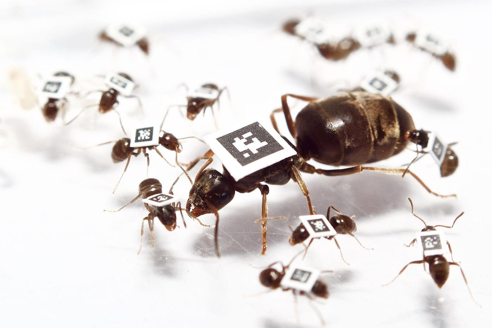
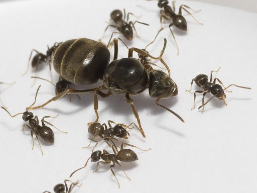
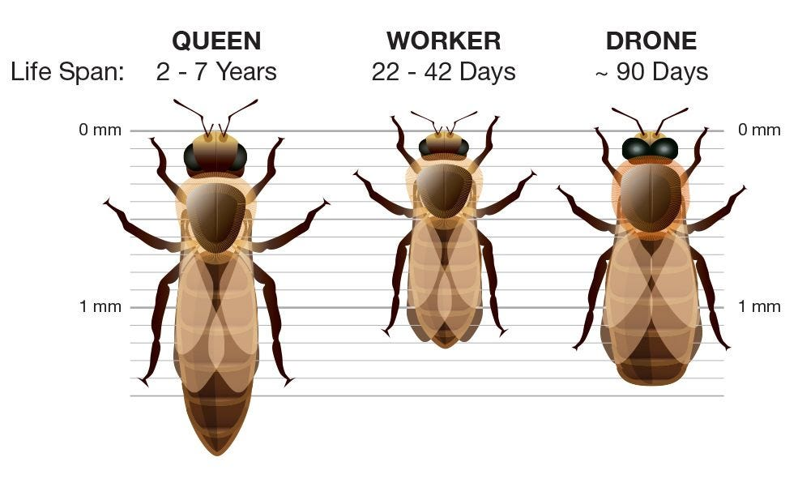

Feb 18, 2021
·
Hierarchy, socialization and the true theory of evolution

As I already pinpointed here the fact that social living made the variety of big felines that we have today be bigger than the ones who did not socialize like cats … I just came to find out that it was worth noticing that the species that get socialized in tribes with the goal of serving a single couple or one individual element are the ones who end up being smaller and smaller. We Can notice that into this kind of socialized species where all the tribes deserve a single element of the tribe, it turn out that very often the this one at the top of the tribe is bigger like with ants and bees
like this

or this
